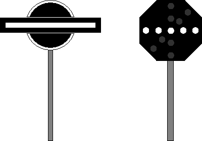

Signalbuch-Online
Signal Ra 6
Bedeutung und Beschreibung des Signalbegriffs Ra 6.
(1) Bedeutung
Halt! Abdrücken verboten.
(2) Beschreibung
Formsignal:
Ein waagerechter weißer Balken mit schwarzem Rand.
Lichtsignal:
Ein waagerechter weißer Lichtstreifen.
